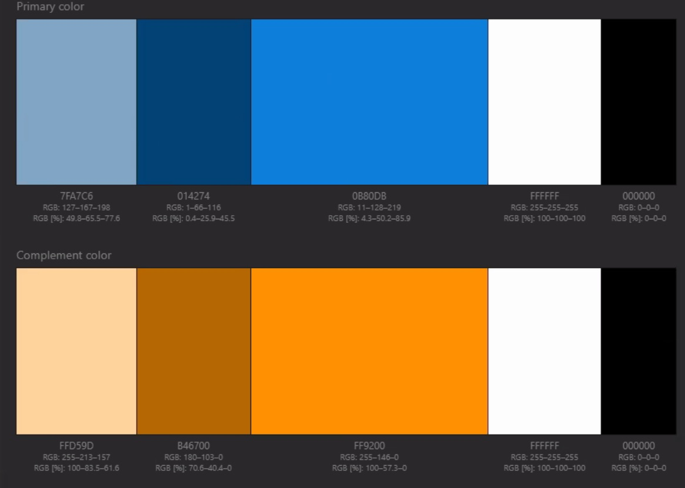

Theme: Ocean
The theme for our project is an ocean theme we will start with the background as a sky blue and as the page goes down it gets a darker blue as if going deeper into the ocean. There will be images displayed as you go down that match the location of where you are at in the page with the ocean.
Colors
Typography
Headings
Font names: Waterfall, cursive
Paragraphs
Font names: Prata
Elements
H1
Heading 1
H2
Heading 2
H3
Heading 3
p
Paragraph
Link
Links to other PagesMixin
@mixin center($width){ display: block; margin-left: auto; margin-right: auto; width: $width; }